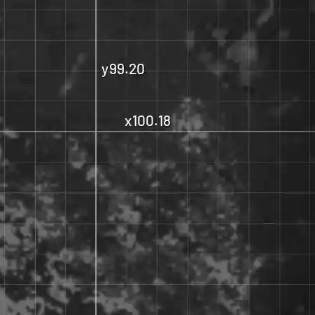
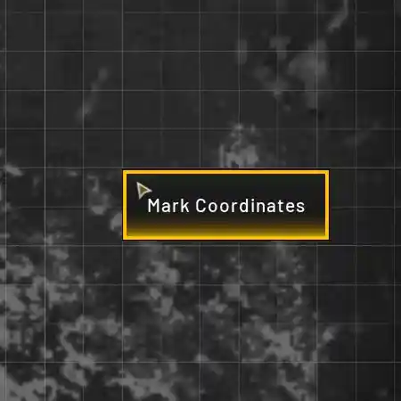
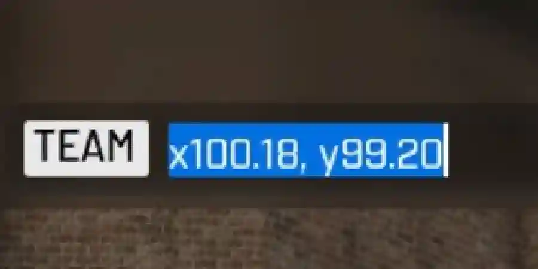

Bearing and range between two map co-ordinates.
Paste grid co-ordinates for You (the firing position), and your Target.
These can be two numbers, likex98.43, y110.38,
98.43 110.38.
Pasting four numbers into You will fill both rows at once.
You can see the target on your own map, so both positions come off the grid.



Someone else has eyes on and calls a bearing and range from where they are standing.
Either way, pasting co-ordinates directly from the game in the format x98.43, y110.38 fills both fields of a row and moves to the next row.
Range uses Pythagoras. Subtract the positions to get dx and dy, square and add them, take the square root, then multiply by 100 for metres.
Bearing uses atan2(dx, dy), with x first and y second. This gives degrees clockwise from north, as the guns use. Negative results have 360 added.
Always subtract target minus you, or the bearing is reversed. The range is the same either way. The grid assumes y increases towards north.
These firing solutions are based only off of the map grid. No elevation, windage/drift or charge adjustments. With Wardogs being in Steam's Early Access phase this is all subject to change.
The spotter's bearing and range are turned into target co-ordinates: x = sx + r·sin(θ) and y = sy + r·cos(θ), where r is their range in grid units. This mirrors the bearing formula, so the two always agree.
Those co-ordinates then go through the normal calculation from your position.
Accuracy depends on the spotter's call. At 650 M, one degree off puts the target about 11 M to the side. If you are closer to the target than the spotter, that error throws your bearing off by more.
The L81 Mortar fires from 52 M to 685 M. The SPH-2 Artillery fires from 745 M to 2660 M.
Targets from 686 M to 744 M fall in a dead band: too far for the mortar and too close for the artillery. Move the gun to get in range.
As range is measured flat across the grid. Elevation could change these bands slightly, particularly in the case of Artillery.